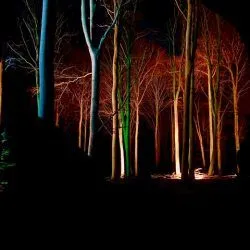
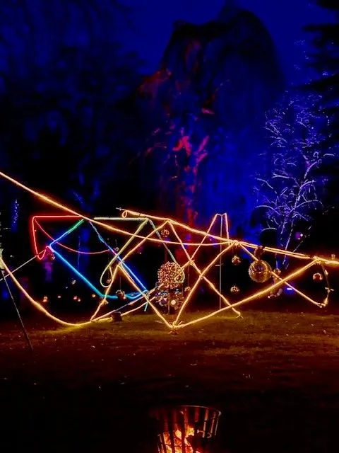

Lyskunst i naturen
Light in
Nature
Kunstneriske lysinstallationer i den danske natur – en magisk oplevelse for alle sanser.
Forhør om Light in Nature
Scroll
Lyskunst i naturen
Kunstneriske lysinstallationer i den danske natur – en magisk oplevelse for alle sanser.
Forhør om Light in NatureOm Light in Nature
Ejer af STC og lyskunster Morten Lind har igennem mange år skabt mange kreative ting rundt i landet, som mange har haft stor glæde af. Det seneste Morten Lind har skabt er Light in Nature, hvor lys bliver brugt på en helt fantastisk måde ude i naturen. Light in Nature er i dag en af Danmarks største lysfestivaler.
"Mange tusinder har oplevet Light in Nature rundt omkring i landet"
Konceptet
Light in Nature er et unikt koncept, der kombinerer den danske naturs skønhed med avancerede lysinstallationer. I mørkets timer oplyses skove og parker med dramatiske og farverige lyseffekter, der skaber en magisk atmosfære.
Konceptet er designet til at overraske og begejstre. Besøgende guides gennem fortryllede naturstier, hvor hvert hjørne rummer en ny lysoplevelse – fra subtile refleksioner i vand til kraftfulde projekteringer i trækronerne.
Forhør om Light in NatureLokationer
STC tog Light in Nature-konceptet til Knuthenborg Safari Park, hvor parken blev forvandlet til en magisk lysoplevelse efter mørkets frembrud.
Med avancerede lysinstallationer spredt ud over parkens naturområder skabte vi en unik After Dark-oplevelse – hvor dyr, natur og lys mødtes på fortryllende vis til glæde for tusindvis af besøgende.
Når mørket falder på, vækkes naturen til live med farver og lys. Light in Nature skaber kunstneriske lysinstallationer, der forvandler skove og parker til magiske oplevelser – en uforglemmelig rejse gennem lyset for hele familien.
Gisselfeld Kloster danner den perfekte ramme for Light in Nature, hvor parkens gamle træer og gange forvandles til en stemningsfuld lysfestival. Besøgende guides gennem en fortryllende lysrute, hvor kunst og natur smelter sammen i mørkets timer.
Ledreborg Slots smukke parkanlæg blev scenen for en af Light in Natures mest mindeværdige installationer. Med magiske lyseffekter i alléerne og op ad slottets facade skabte vi en uforglemmelig oplevelse, der slog besøgende med forundring.
En aften i lysets tegn – hvor slottets historiske omgivelser og moderne lyskunst forenes i en stemningsfuld helhed. En uforglemmelig oplevelse for hele familien.
Naturens ansigter er en udstilling skabt af Morten Lind, der igennem mange år har ladet sig inspirere af de former, strukturer og udtryk han finder i den danske natur – i bark, sten, vand og grene.
Udstillingen omsætter denne fascination til lyskunst, hvor naturens egne ansigter træder frem i mørket og inviterer den besøgende til at se naturen med nye øjne.
Galleri







Vi skaber unikke lysoplevelser til festivaler, kommunale events og private arrangementer.
Kontakt os for at høre mere om mulighederne.